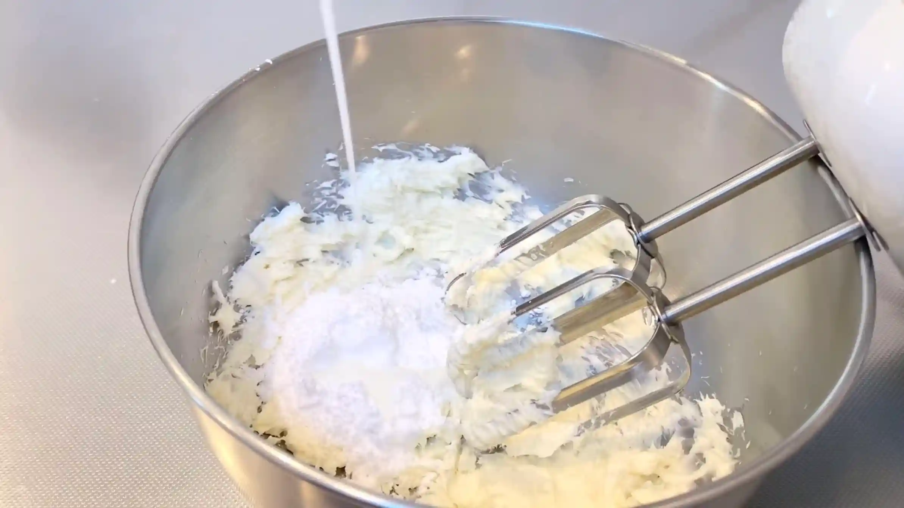
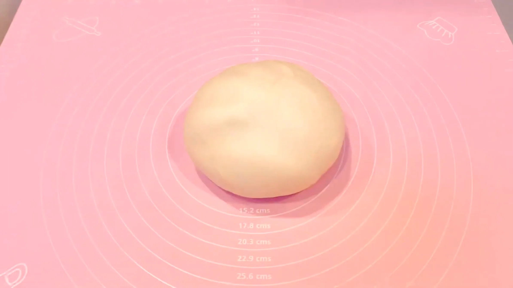
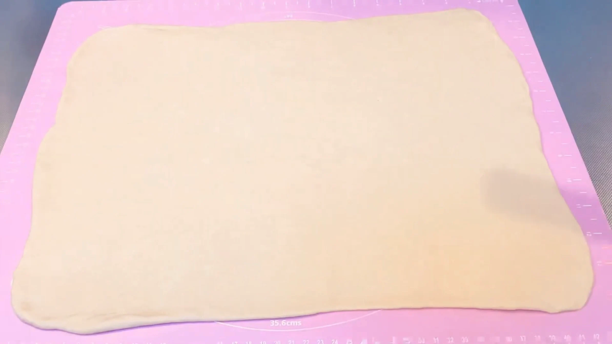
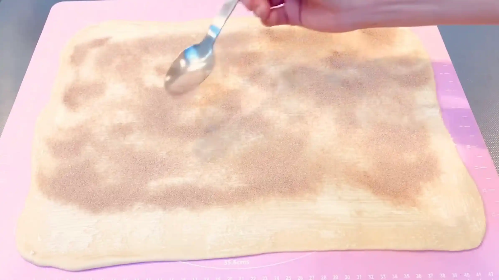
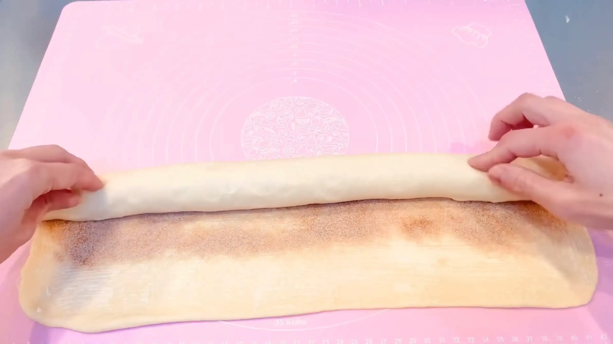
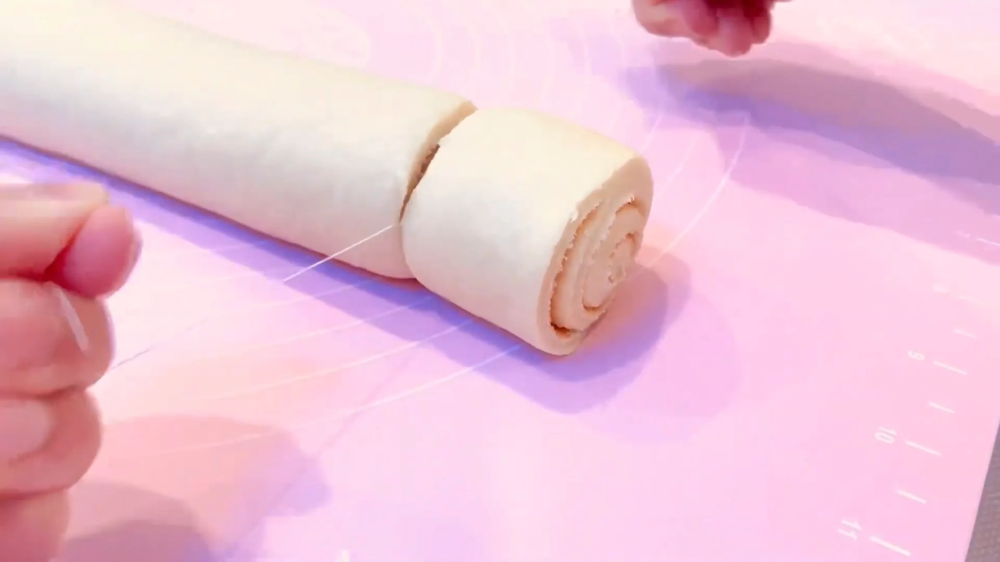
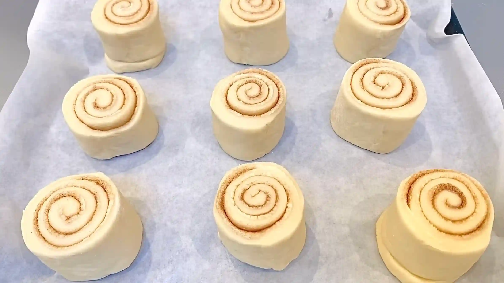
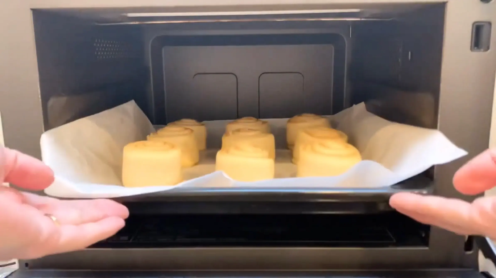

材料 9個分
※粉量を変えると自動計算されます
生地
フィリング
フロスティング
作り方
フロスティング
STEP 1
フロスティングを作る
クリームチーズと粉砂糖をハンドミキサーで混ぜ、クリーム状にします。そこに牛乳を少しずつ加え、全体が均一になるまで混ぜます。牛乳は一度に入れず、塗りやすい硬さに調整します。
クリームチーズと粉砂糖をハンドミキサーで混ぜ、クリーム状にします。そこに牛乳を少しずつ加え、全体が均一になるまで混ぜます。牛乳は一度に入れず、塗りやすい硬さに調整します。

生地
STEP 1
ホームベーカリーで生地を作る
ホームベーカリーに材料をセットして「生地コース」を選べば、生地作りから一次発酵までお任せできます。コースが終わったら、次の作業に進みます。
ホームベーカリーに材料をセットして「生地コース」を選べば、生地作りから一次発酵までお任せできます。コースが終わったら、次の作業に進みます。

STEP 2
生地を取り出し、丸めて常温で20分おく
生地を丸めて表面を整え、乾燥しないようにボウルをかぶせます。休ませることで生地がゆるみ、次の工程で伸ばしやすくなります。
生地を丸めて表面を整え、乾燥しないようにボウルをかぶせます。休ませることで生地がゆるみ、次の工程で伸ばしやすくなります。

STEP 3
生地を30㎝×40㎝に伸ばす（[動画 01:02]）
生地を四角に伸ばす際は、中央から左上、右上、左下、右下へと、めん棒を外側に向かって動かします。中央から四隅へ均等に伸ばしていくと、自然と四角い形に整っていきます。
生地を四角に伸ばす際は、中央から左上、右上、左下、右下へと、めん棒を外側に向かって動かします。中央から四隅へ均等に伸ばしていくと、自然と四角い形に整っていきます。

STEP 4
バターを塗り、グラニュー糖とシナモンを全体に広げる
バターは溶かさず、柔らかくしたクリーム状のものを使います。溶かしバターを使うよりも油っぽさが出にくく、バターの香りがしっかり感じられるリッチな味わいに仕上がります。
バターは溶かさず、柔らかくしたクリーム状のものを使います。溶かしバターを使うよりも油っぽさが出にくく、バターの香りがしっかり感じられるリッチな味わいに仕上がります。

STEP 5
生地を巻く
巻き始めは、生地の端で芯を作るようにすると巻きやすくなります。太さが均一になるように、左右をバランス良く巻き進めていきます。最後に、巻き終わりを軽く閉じます。
巻き始めは、生地の端で芯を作るようにすると巻きやすくなります。太さが均一になるように、左右をバランス良く巻き進めていきます。最後に、巻き終わりを軽く閉じます。

STEP 6
糸で9等分に切り分ける（[動画 07:47]）
包丁で押し切ると生地がつぶれやすいため、糸を使って切り分けることで、巻いた生地の形を保ったままきれいにカットできます。
包丁で押し切ると生地がつぶれやすいため、糸を使って切り分けることで、巻いた生地の形を保ったままきれいにカットできます。

STEP 7
天板に並べ、ラップをして常温で1時間おく
生地がひとまわり大きくなるまで二次発酵させます。シナモンロールは発酵時間によって食感が異なり、短いとしっとりどっしり食感に、長いとふんわり軽い食感になります。今回は長めの発酵でふんわり仕上げますが、お好みの食感に合わせて発酵時間を調整してください。
生地がひとまわり大きくなるまで二次発酵させます。シナモンロールは発酵時間によって食感が異なり、短いとしっとりどっしり食感に、長いとふんわり軽い食感になります。今回は長めの発酵でふんわり仕上げますが、お好みの食感に合わせて発酵時間を調整してください。

STEP 8
予熱なしのオーブン190℃で25分〜30分焼く
予熱なしで焼くことで、生地にゆっくり熱が入り、焼き始めに生地が膨らむ時間を確保しやすくなります。オーブンによって焼き上がりが異なるため、表面の焼き色や生地の状態を見ながら、必要に応じて焼き時間を調整してください。
予熱なしで焼くことで、生地にゆっくり熱が入り、焼き始めに生地が膨らむ時間を確保しやすくなります。オーブンによって焼き上がりが異なるため、表面の焼き色や生地の状態を見ながら、必要に応じて焼き時間を調整してください。

STEP 9
仕上げにフロスティングを塗る
フロスティングを塗ると、クリームチーズのコクと甘さが加わり、一気にアメリカンスタイルのシナモンロールに変身します。焼き上がりの熱が少し落ち着いてから塗ると、フロスティングが溶けすぎず塗りやすくなります。
フロスティングを塗ると、クリームチーズのコクと甘さが加わり、一気にアメリカンスタイルのシナモンロールに変身します。焼き上がりの熱が少し落ち着いてから塗ると、フロスティングが溶けすぎず塗りやすくなります。
動画でチェック
おいしく作るためのワンポイントコラム
5㎝ほどの分厚さにカットして、クリームチーズのフロスティングをたっぷり塗る。それが、本場アメリカ風のシナモンロールです。
『アメリカンシナモンロール』は、お砂糖とバターを贅沢に使ったリッチな生地に、クリームチーズ・粉砂糖・牛乳で作る特製のフロスティングを合わせます。お店のような味わいをおうちで楽しむための3つのコツをまとめました。
① 巻き始めのコツ
大きく伸ばした生地にバターを塗り、シナモンとグラニュー糖を広げて巻いていくのですが、巻き始めに芯を作るのがポイント。シナモンとお砂糖の水分で生地の表面がツルッと滑ってしまい、最初は少し巻きにくさを感じるかもしれません。ここは焦らずに、まずは端からしっかりと取っ掛かりを作ってあげることが大切です。綺麗に巻く必要はありません。何となく巻けていれば十分です。最後にはフロスティングをかけて可愛く仕上がるため、ここは気楽に作業するのがおすすめです。
② アメリカ風のコツ
シナモンロールにはいくつかスタイルがありますが、今回の本場アメリカ風に仕上げる一番の特徴は、生地のボリューム感です。今回は5㎝ほどの分厚さに贅沢にカットしていきます。こうしてしっかりと分厚くカットすることで高さが生まれ、熱を入れたときにふんわり焼き上げることができます。
③ 濃厚フロスティングのコツ
仕上げに塗るクリームは、お水とお砂糖で作る定番のアイシングではなく、クリームチーズ・粉砂糖・牛乳を合わせた特製のフロスティングクリームを使います。ここもアメリカ風ですね！少し固めの質感に仕上げることで生地にしっかり絡み、クリームチーズ特有の酸味は強すぎず、まるでミルクフランスに入っているような濃厚でリッチなミルク感を楽しめます。仕上げにたっぷりと塗れば、濃厚な甘さの幸せシナモンロールのできあがりです。
巻き加減や、ちぎりパンのくっつき加減など、焼き上がりが思っていた感じにならないこともあるかもしれません。ただ、フロスティングをたっぷり塗れば、そんな些細なことは全く気にならない、可愛い仕上がりになります。一口食べれば、幸せが広がる格別なおいしさです。
『アメリカンシナモンロール』は、お砂糖とバターを贅沢に使ったリッチな生地に、クリームチーズ・粉砂糖・牛乳で作る特製のフロスティングを合わせます。お店のような味わいをおうちで楽しむための3つのコツをまとめました。
① 巻き始めのコツ
大きく伸ばした生地にバターを塗り、シナモンとグラニュー糖を広げて巻いていくのですが、巻き始めに芯を作るのがポイント。シナモンとお砂糖の水分で生地の表面がツルッと滑ってしまい、最初は少し巻きにくさを感じるかもしれません。ここは焦らずに、まずは端からしっかりと取っ掛かりを作ってあげることが大切です。綺麗に巻く必要はありません。何となく巻けていれば十分です。最後にはフロスティングをかけて可愛く仕上がるため、ここは気楽に作業するのがおすすめです。
② アメリカ風のコツ
シナモンロールにはいくつかスタイルがありますが、今回の本場アメリカ風に仕上げる一番の特徴は、生地のボリューム感です。今回は5㎝ほどの分厚さに贅沢にカットしていきます。こうしてしっかりと分厚くカットすることで高さが生まれ、熱を入れたときにふんわり焼き上げることができます。
③ 濃厚フロスティングのコツ
仕上げに塗るクリームは、お水とお砂糖で作る定番のアイシングではなく、クリームチーズ・粉砂糖・牛乳を合わせた特製のフロスティングクリームを使います。ここもアメリカ風ですね！少し固めの質感に仕上げることで生地にしっかり絡み、クリームチーズ特有の酸味は強すぎず、まるでミルクフランスに入っているような濃厚でリッチなミルク感を楽しめます。仕上げにたっぷりと塗れば、濃厚な甘さの幸せシナモンロールのできあがりです。
巻き加減や、ちぎりパンのくっつき加減など、焼き上がりが思っていた感じにならないこともあるかもしれません。ただ、フロスティングをたっぷり塗れば、そんな些細なことは全く気にならない、可愛い仕上がりになります。一口食べれば、幸せが広がる格別なおいしさです。


甘いクリームをたっぷり塗った、アメリカンスタイルのしっとりリッチな『シナモンロール』のレシピです！お砂糖とバターを贅沢に使ったリッチな生地に、特製のクリームチーズフロスティングが最高にマッチ。コラムでは「巻き始めのコツ」「アメリカ風のコツ」「濃厚フロスティングのコツ」の3つのコツをご紹介します。